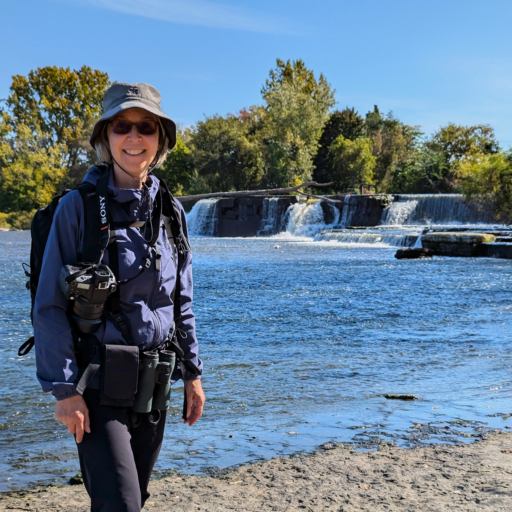

Toutes les photos ont été inspirées par la beauté de la nature et prises avec passion
Photographe animalière, ornithologue et astronome amatrices

Ayant grandi à la campagne au cœur de l’astroblème de Charlevoix, c’est depuis ma tendre enfance que j’adore la nature et c’est là que je me sens le mieux. Chaque observation, qu’il s’agisse de la faune, de la flore ou d’un paysage, a fait naître en moi une passion débordante. De plus, la proximité avec les animaux me fait vivre des émotions fortes.
Je suis astronome amatrice depuis 2019 et j’adore découvrir et observer le ciel avec mon télescope. C’est en 2023 que j’ai commencé à observer les oiseaux et devant toute cette beauté, je suis rapidement devenu avide de moments privilégiés à immortaliser. C’est alors, en 2024, que j’ai débuté la photographie animalière. Chaque image est un moment d’émotion capturée, une symphonie de sentiments qui guide son approche.
Mes photos ont pour but de vous partager toute la splendeur de la nature et de la faune et ainsi vous sensibiliser à la protection des animaux et de leurs habitats.
Tout au long de mon parcours en astronomie et en ornithologie, j’ai rencontré des personnes exceptionnelles et passionnées. Merci à tous ceux et celles qui ont croisés ma route, au plaisir de vous revoir et de faire de nouvelles connaissances!
Je suis astronome amatrice depuis 2019 et j’adore découvrir et observer le ciel avec mon télescope. C’est en 2023 que j’ai commencé à observer les oiseaux et devant toute cette beauté, je suis rapidement devenu avide de moments privilégiés à immortaliser. C’est alors, en 2024, que j’ai débuté la photographie animalière. Chaque image est un moment d’émotion capturée, une symphonie de sentiments qui guide son approche.
Mes photos ont pour but de vous partager toute la splendeur de la nature et de la faune et ainsi vous sensibiliser à la protection des animaux et de leurs habitats.
Tout au long de mon parcours en astronomie et en ornithologie, j’ai rencontré des personnes exceptionnelles et passionnées. Merci à tous ceux et celles qui ont croisés ma route, au plaisir de vous revoir et de faire de nouvelles connaissances!